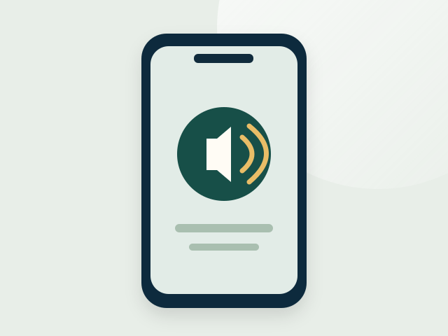

دورة VoiceOver الصوتية على الآيفون
ملفات MP3 قابلة للتنزيل، مع النص الكامل في ملف Word.
- تحميل الملفات بعد الشراء عبر Gumroad.
- مناسبة لمن يفضّل الاستماع إلى الدروس والرجوع للنص.
استعرض الصيغتين والمنهج والمعاينات المجانية قبل اختيار الدورة المناسبة لك.
دورتان مستقلتان للمكفوفين وضعاف البصر المبتدئين، ولأهاليهم والمعلمين: دورة صوتية قابلة للتنزيل، ودورة مصوّرة على Udemy. من إعداد هايس العنزي، معلم ومستخدم يومي لقارئ الشاشة.

ملفات MP3 قابلة للتنزيل، مع النص الكامل في ملف Word.
دروس مصوّرة تشرح الإيماءات والكتابة والمكالمات والإعدادات بالعربية.
الدروس في الدورتين بصوت مولّد بالذكاء الاصطناعي، وشرائح الدورة المصوّرة مصممة بمساعدة أدواته.
كل دورة شراء مستقل. السعر وطرق الوصول وشروط الشراء المعتمدة تظهر في صفحة المنصة قبل الدفع.
بعد فتح صفحة Gumroad اختر Buy this لبدء الشراء. وعلى Udemy اختر Buy now أو أضف الدورة إلى السلة. قد تختلف لغة الأزرار، ويظهر السعر النهائي والعملة والضرائب أو العروض داخل المنصة قبل الدفع.
للتعرّف على أسلوب الشرح، تتوفر معاينة الدرسين التاليين دون شراء الدورة:
المعاينات خاصة بالدورة المصوّرة، ولا تمثل عينة من ملفات Gumroad الصوتية. زر الشراء يفتح صفحة الدورة نفسها، ولا يبدأ دفعًا تلقائيًا.
المحاور التالية منشورة في وصف الدورتين. الأزمنة بجوار العناوين تخص دروس Udemy.
لمن يبدأ مع الآيفون ويريد تعلّم التنقل والكتابة والتواصل باستخدام قارئ الشاشة.
لمن يريد فهم الإيماءات الأساسية ومساعدة طفله على التطبيق خطوة بخطوة.
لمن يحتاج شرحًا عربيًا منظمًا للأساسيات وخطة تمرين للمبتدئ.
هايس العنزي، معلم سعودي ومستخدم يومي لقارئ الشاشة. أقدّم شرحًا عربيًا مرتبًا، مع خطوات لفظية تساعد المبتدئ على التطبيق على هاتفه، وأهتم بوضوح المحتوى وسهولة الوصول.
تعرّف على هايس العنزي ونماذج أعمالهجهاز آيفون، مع تطبيق كل درس عمليًا وإعادته عند الحاجة. وصف دورة Udemy يوضح أن الخبرة السابقة غير مطلوبة.
لا. الدورة الصوتية على Gumroad والمصوّرة على Udemy منتجان مستقلان. اختر المنصة والصيغة المناسبة لك.